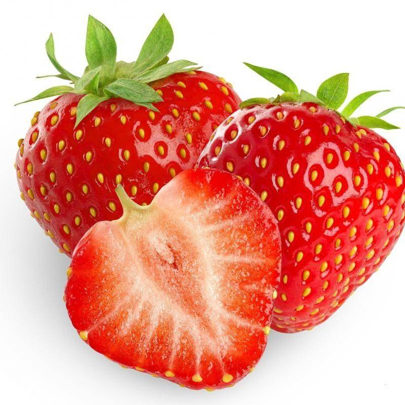

JESTES TRUSKAWKA
 Truskawka to najbardziej typowy owoc na Ziemi
Truskawka jest slodka i mila mozna ja jesc tak sobie albo np zrobic koktajl
Jestes osoba bardzo uniwersalna w sensie do tanca i do rozanca
Na pewno milo sie z toba gada i jestes bystra/bystry
Fajnie byc truskawka ale w sumie duzo ludzi nimi jest